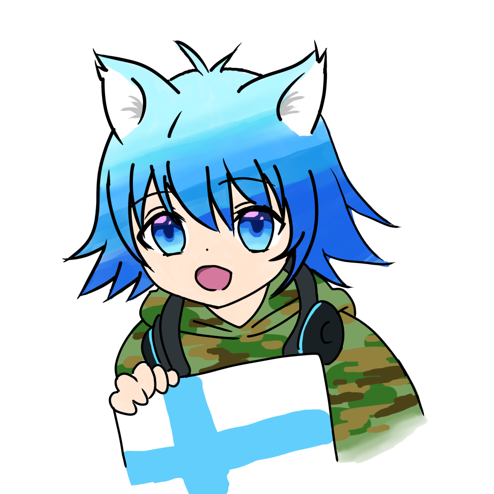
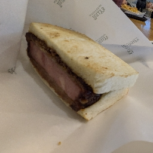
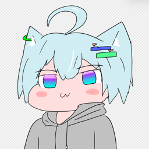

大臣紹介
内閣総理大臣
ゆゆと
防衛大臣
紅蓮ノヴァ
国土交通省
KJ_87
鉄道庁

フィンネッコ
スポーツ庁

かずもに
サイバー庁
marisa
宮内省
葵

ky0m
経済産業省

nekoLnuβ
ライム
zainin
財務省
常磐 優希「ウニ」
くれは
文部科学省
トト
ルヴァ@おまねこ推し
爆破部隊元帥
月（ルナ）（ネコ）
軍事参謀大臣
shun_game11
政治局委員会
ちゃちゃ丸さん
れじすん